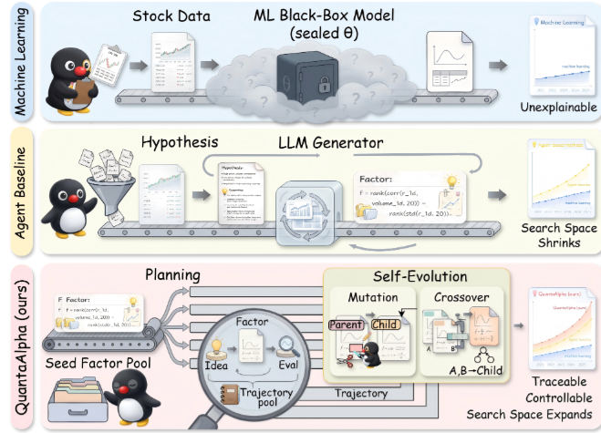

AI4Investment
Reported by QbitAI mirror
QuantaAlpha Alpha Mining Engine
Evolutionary LLM-driven alpha mining (QuantaAlpha): each mining run is a trajectory refined by trajectory-level mutation and crossover—revising weak segments and recombining high-reward paths—with semantic consistency across hypotheses, executable factor code, and evaluation under noisy, non-stationary markets.
27.75%Reported ARR
CSI 300Core Market
Zero-shotCross-market